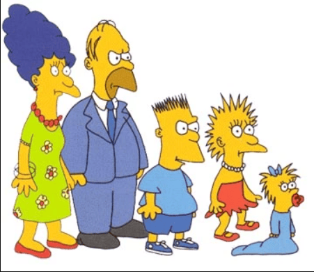

Los Simpson
En lÃnea
Mmm... donas... ¿alguien sabe por qué nos hicieron famosos?
08:15¡Ay caramba! Porque somos los mejores, viejo
08:16En 1987 salimos en el Tracey Ullman Show. Luego, en 1989, empezamos con nuestro propio programa
08:20Recuerden agradecerle a Matt Groening, niños.
08:16Exacto, mamá. Sin él no serÃamos nada.
08:21

08:22
08:22
¡Ese dibujo parece hecho por un niño!
08:25Papá, ese fue el primer boceto de nuestra familia. ¡Respétalo!
08:27Jeje... ese soy yo, el rebelde desde el dÃa uno.
08:30
08:32